Instructions:
Getting started
Go to the Scratch website at https://scratch.mit.edu. or click the Scratch logo:
You should sign in or join Scratch to be able to save your work and share it with others.
If you already have a Scratch account, click Sign In (at the top right):
otherwise click Join Scratch (at the top right):
Go to the starter project at https://scratch.mit.edu/projects/581184007 and click Remix (at the top right):
When the new project has opened (this takes a few seconds), click Share (at the top):
Overview
The project we just copied already contains 24 sprites but (almost) no code yet.
We will develop the game in 4 steps:
- Create the basic game using the first 20 sprites (Object-Dress to Object-Ring).
- Add a guide to explain the game and tell when the game is over. We will add a new sprite for this.
- Add a button to make flash the objects not found yet. We will use the Cheat button sprite for this.
- Add a button to show a screen with all the objects to find. We will use the Help button, Help screen, and All Objects sprites for this.
Step 1 - Create the basic game
Click on Stage (at the bottom right):
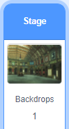Make a SCORE variable to keep track of the score:
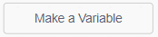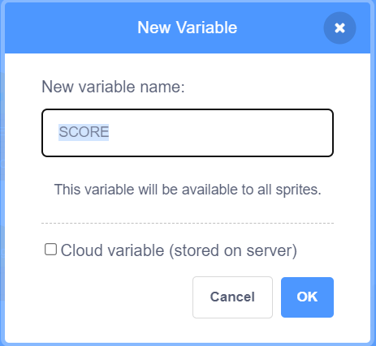
Make a LEFT variable to keep track of the number of remaining objects.
Move SCORE to the bottom left corner and LEFT to the bottom right corner:
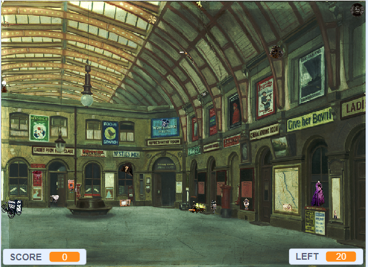Add this script to Stage to reset the variables when the game starts:
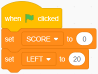Click it to test that it works. SCORE should show 0 and LEFT 20.
Add this script to Stage to remove one point from the score when the player makes a wrong guess:
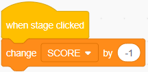Click it to test that it works. SCORE should go down.
Add this script to Stage to add one point to the score and remove one from the number of remaining objects when the player makes a good guess:
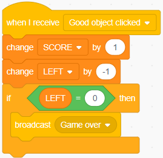Click it to test that it works. SCORE should go up and LEFT should go down.
Now let's add some code to Object-Dress. So click on this sprite.
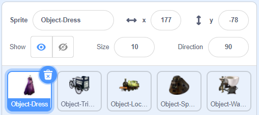Create a variable which will be used to restore the objects to their original size:
- Go to the Variables blocks (orange).
- Click Make a Variable, name it ORIGINAL SIZE and untick it to stop showing it on the stage.
Add a custom block to Object-Dress to animate it:
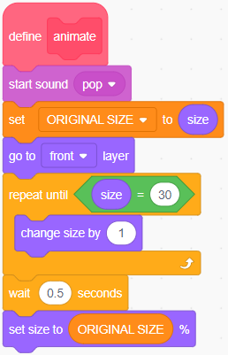Click it to test that it works. There should be a pop sound and the sprite should grow bigger then return to its original size.
Add this script to Object-Dress to handle when the player clicks it:
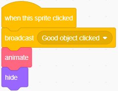Click it to test that it works. SCORE & LEFT should change, the animation should run and the sprite should disappear.
Add this script to Object-Dress to reset it when the game starts:
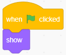Click it to test that it works. The sprite should become visible again.
Test the game:
- Click the green flag - Object-Dress should be visible, SCORE should be 0 and LEFT should be 20
- Click the dress - Object-Dress should disappear and SCORE & LEFT should change
- Click another object - nothing should happen
- Click the background - SCORE should go down by 1
- Click the green flag - Object-Dress should become visible again
Nothing happens when the other objects are clicked because they have no code yet. Let's fix that by copying the code from Object-Dress to each of the other objects (from Object-Tricycle to Object-Ring):
- Drag the define animate block from Object-Dress and drop it on each of the other sprites.
- Drag the when flag clicked block from Object-Dress and drop it on each of the other sprites.
- Drag the when this sprite clicked block from Object-Dress and drop it on each of the other sprites.
Test the game:
- Click the green flag - all the objects should be visible, SCORE should be 0 and LEFT should be 20
- Click an object - it should disappear and SCORE & LEFT should change
- Repeat step 2 until there are no more objects - when done LEFT should be 0
- Click the background - SCORE should go down by 1
- Click the green flag - all the objects should become visible again, SCORE should be 0 and LEFT should be 20
If an object doesn't behave as expected, check that it has the same code as the other objects.
Now that the basic game works we will improve it little by little in the next sections. We will add:
- a guide character to explain what the game is about and when the game is over;
- a Cheat button to make the remaining objects flash; and
- a Help button to present all the objects and their descriptions.
Step 2 - Add the guide
Click the new sprite icon:
Pick Marian from the People category or somebody else. Move the spite until the feet are at the bottom of the stage.
Under the Sounds tab, click the new sound icon:
and choose Mystery from the Loops category. Repeat and choose Triumph from the same category.
Add this script to Marian to display the instructions at the start of the game:
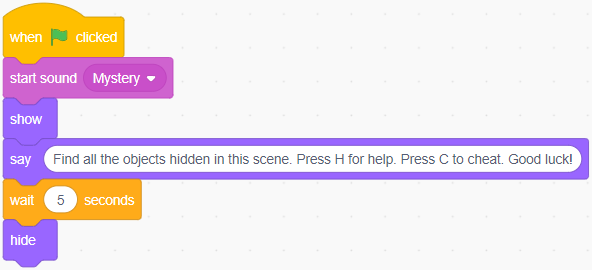Click it to test that it works. The guide should pop up and disappear after the music is over.
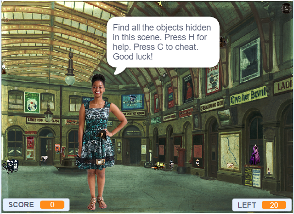Add this script to Marian to signal the end of the game:
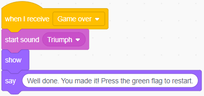Click it to test that it works. The guide should pop up and stay on the stage after the music is over.
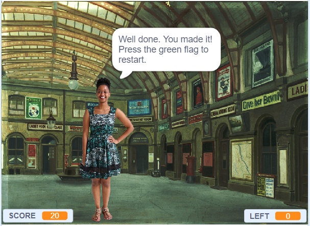Test the game:
- Click the green flag - the guide should appear then disappear
- Click all the object
- The guide should appear when the game is over
Step 3 - Add the Cheat button
Add the following scripts to Cheat button.
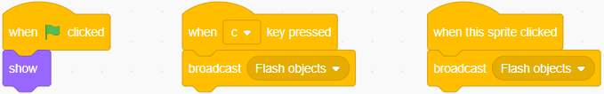Add a custom block to Object-Dress to flash it:
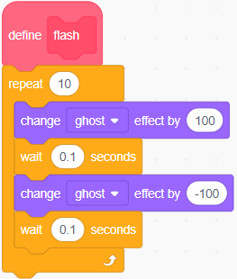Click it to test that it works.
Add this script to Object-Dress to handle when the flash message is received:
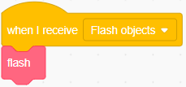Click it to test that it works.
Test that Object-Dress flashes when Cheat button is clicked or the C key is pressed.
The other objects are not flashing because they have no code yet. Let's fix that by copying the code we just added from Object-Dress to each of the other objects (from Object-Tricycle to Object-Ring):
- Drag the define flash block from Object-Dress and drop it on each of the other sprites.
- Drag the when I receive (Flash objects) block from Object-Dress and drop it on each of the other sprites.
Test that all the objects flash when Cheat button is clicked or the C key is pressed.
Step 4 - Add the Help button
Add the following scripts to Help button sprite.
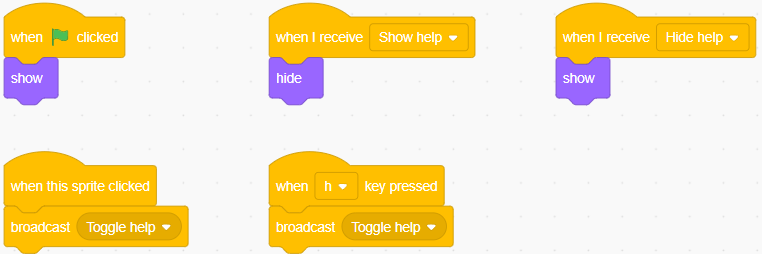Make a help visible? variable for Help screen only:
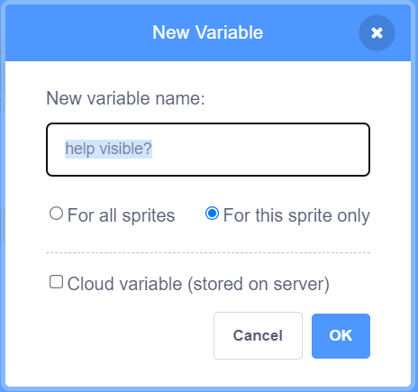
Add these custom blocks to Help screen:
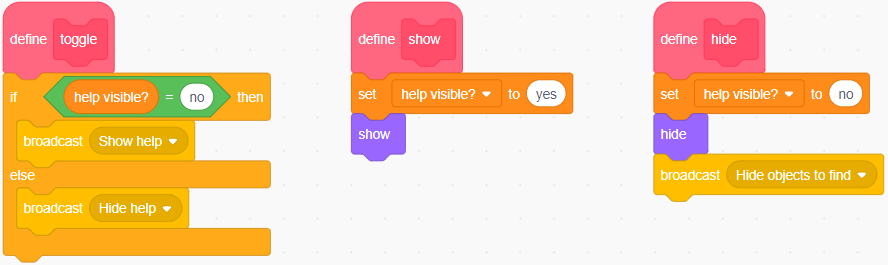Add these scripts to Help screen:
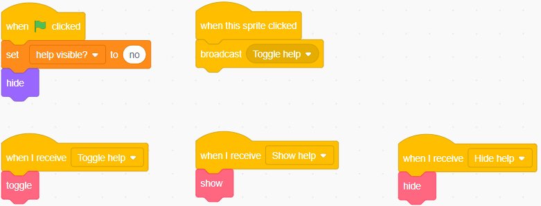Test by clicking Help button or pressing the C key:
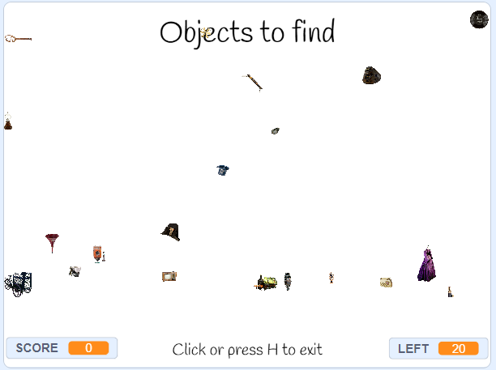There are programming mistakes (bugs) here:
- SCORE & LEFT should not be visible when the help screen is up.
- The objects to be clicked should not be visible.
- The help screen does not list the objects.
Let's fix issue #1 by adding these scripts to Stage:
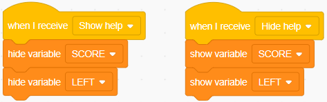Let's fix issue #2 by adding a go to [front] layer block at the end of the define show block in Help screen:
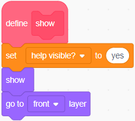To fix issue #3 we are going to use All Objects. It contains 20 costumes, one per object to find. We are going to create 20 clones. Each clone will show a different costume and we will arrange the clones in a grid with 4 rows and 5 columns. Each clone will also have its own id variable which will contain a number between 1 and 20. This variable will be used to select the right costume and also to display the right description when the clone is clicked. All Objects already contains a descriptions list with a description for each object.
Make an id variable to differentiate the clones from each other:
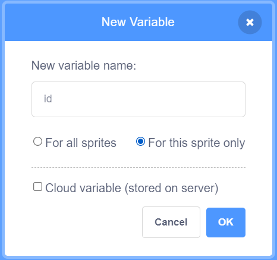
Add a custom block to All Objects:
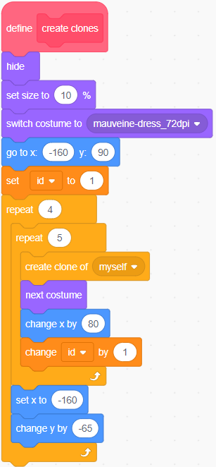Add these scripts to All Objects:
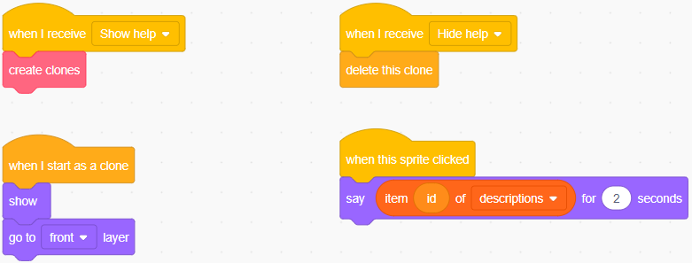Test by clicking Help button or pressing the H key.
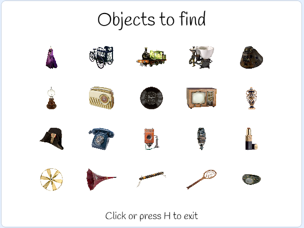Clicking on an object should display its description.